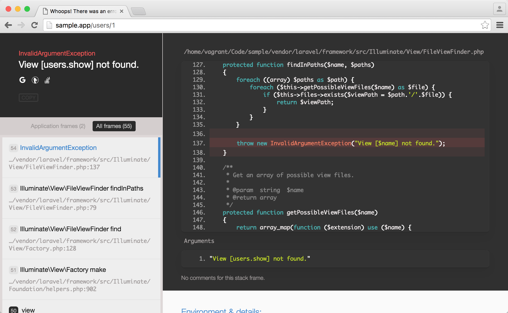

6.2. 显示用户的信息
用户资源
我们之前已使用 Tinker 成功创建了一个用户对象。运行下面命令使用 Tinker 来查询用户的信息，确保该用户对象在数据库中确实存在：
$ php artisan tinker从数据库中获取第一号用户的个人信息：
>>> App\Models\User::first()
=> App\Models\User {#691
id: 1,
name: "Aufree",
email: "aufree@yousails.com",
created_at: "2016-09-11 08:53:33",
updated_at: "2016-09-11 08:58:01",
}通过 Tinker 返回的信息可以看到，id 为 1，用户名为 Aufree 的用户信息被成功返回。接下来让我们开始着手构建用户个人页面，并在此页面上对用户信息进行显示。
Laravel 遵从 RESTful 架构的设计原则，将数据看做一个资源，由 URI 来指定资源。对资源进行的获取、创建、修改和删除操作，分别对应 HTTP 协议提供的 GET、POST、PATCH 和 DELETE 方法。当我们要查看一个 id 为 1 的用户时，需要向 /users/1 地址发送一个 GET 请求，当 Laravel 的路由接收到该请求时，默认会把该请求传给控制器的 show 方法进行处理。
Laravel 为我们提供了 resource 方法来定义用户资源路由。
routes/web.php
<?php
Route::get('/', 'StaticPagesController@home')->name('home');
Route::get('/help', 'StaticPagesController@help')->name('help');
Route::get('/about', 'StaticPagesController@about')->name('about');
Route::get('signup', 'UsersController@create')->name('signup');
Route::resource('users', 'UsersController');新增的 resource 方法将遵从 RESTful 架构为用户资源生成路由。该方法接收两个参数，第一个参数为资源名称，第二个参数为控制器名称。
Route::resource('users', 'UsersController');上面代码将等同于：
Route::get('/users', 'UsersController@index')->name('users.index');
Route::get('/users/{user}', 'UsersController@show')->name('users.show');
Route::get('/users/create', 'UsersController@create')->name('users.create');
Route::post('/users', 'UsersController@store')->name('users.store');
Route::get('/users/{user}/edit', 'UsersController@edit')->name('users.edit');
Route::patch('/users/{user}', 'UsersController@update')->name('users.update');
Route::delete('/users/{user}', 'UsersController@destroy')->name('users.destroy');可以看到使用 resource 方法让我们少写了很多代码，且严格按照了 RESTful 架构对路由进行设计。
生成的资源路由列表信息如下所示：
| HTTP 请求 | URL | 动作 | 作用 |
|---|---|---|---|
| GET | /users | UsersController@index | 显示所有用户列表的页面 |
| GET | /users/{user} | UsersController@show | 显示用户个人信息的页面 |
| GET | /users/create | UsersController@create | 创建用户的页面 |
| POST | /users | UsersController@store | 创建用户 |
| GET | /users/{user}/edit | UsersController@edit | 编辑用户个人资料的页面 |
| PATCH | /users/{user} | UsersController@update | 更新用户 |
| DELETE | /users/{user} | UsersController@destroy | 删除用户 |
这时我们访问 http://sample.test/users/1 页面，会出现如下页面。这是因为该路由请求由 UsersController 里面的 show 方法来处理，但现在该方法还不存在，因此会导致报错。
UsersController 的 show 方法定义如下。
app/Http/Controllers/UsersController.php
<?php
namespace App\Http\Controllers;
use Illuminate\Http\Request;
use App\Http\Requests;
use App\Models\User;
class UsersController extends Controller
{
public function create()
{
return view('users.create');
}
public function show(User $user)
{
return view('users.show', compact('user'));
}
}Laravel 会自动解析定义在控制器方法（变量名匹配路由片段）中的 Eloquent 模型类型声明。在上面代码中，由于 show() 方法传参时声明了类型 —— Eloquent 模型 User，对应的变量名 $user 会匹配路由片段中的 {user}，这样，Laravel 会自动注入与请求 URI 中传入的 ID 对应的用户模型实例。
此功能称为 『隐性路由模型绑定』，是『约定优于配置』设计范式的体现，同时满足以下两种情况，此功能即会自动启用：
- 路由声明时必须使用 Eloquent 模型的单数小写格式来作为路由片段参数，User 对应
{user}：
Route::get('/users/{user}', 'UsersController@show')->name('users.show');在使用资源路由 Route::resource('users', 'UsersController'); 时，默认已经包含了上面的声明。
- 控制器方法传参中必须包含对应的 Eloquent 模型类型声明，并且是有序的：
public function show(User $user)
{
return view('users.show', compact('user'));
}当请求 http://sample.test/users/1 并且满足以上两个条件时，Laravel 将会自动查找 ID 为 1 的用户并赋值到变量 $user 中，如果数据库中找不到对应的模型实例，会自动生成 HTTP 404 响应。
return view('users.show', compact('user'));我们将用户对象 $user 通过 compact 方法转化为一个关联数组，并作为第二个参数传递给 view 方法，将数据与视图进行绑定。
show 方法添加完成之后，我们便能在视图中使用 user 变量来访问通过 view 方法传递给视图的用户数据。
由于我们还没有创建用户个人页面，因此这时访问用户页面时会出现如下报错。
View [users.show] not found.
下面让我们来新建一个用户个人页面。
resources/views/users/show.blade.php
@extends('layouts.default')
@section('title', $user->name)
@section('content')
{{ $user->name }} - {{ $user->email }}
@stop由于我们使用了 view('users.show', compact('user')) 将用户数据与视图进行绑定，因此在视图中可以直接使用 $user 来访问用户实例。
这时候我们再访问用户个人页面，便能够看到基本的数据展示。
Gravatar 头像和侧边栏
现在，我们要为用户的个人页面添加头像显示的功能。接下来的项目开发将使用 Gravatar 来为用户提供个人头像支持。Gravatar 为 “全球通用头像”，当你在 Gravatar 的服务器上放置了自己的头像后，可通过将自己的 Gravatar 登录邮箱进行 MD5 转码，并与 Gravatar 的 URL 进行拼接来获取到自己的 Gravatar 头像。
接下来让我们在用户模型中定义一个 gravatar 方法，用来生成用户的头像。
app/Models/User.php
<?php
namespace App\Models;
.
.
.
class User extends Authenticatable
{
.
.
.
public function gravatar($size = '100')
{
$hash = md5(strtolower(trim($this->attributes['email'])));
return "http://www.gravatar.com/avatar/$hash?s=$size";
}
} 该方法主要做了以下几个操作：
- 为 gravatar 方法传递的参数
size指定了默认值 100； - 通过
$this->attributes['email']获取到用户的邮箱； - 使用
trim方法剔除邮箱的前后空白内容； - 用
strtolower方法将邮箱转换为小写； - 将小写的邮箱使用 md5 方法进行转码；
- 将转码后的邮箱与链接、尺寸拼接成完整的 URL 并返回；
定义好 gravatar 方法之后，我们便可以在视图中通过以下方式进行调用：
使用默认尺寸来获取头像：
$user->gravatar();为 gravatar 指定尺寸大小来获取头像：
$user->gravatar('140');接下来让我们来构建一个全局通用的局部视图，用于展示用户的头像和用户名等基本信息。
resources/views/shared/_user_info.blade.php
<a href="{{ route('users.show', $user->id) }}">
<img src="{{ $user->gravatar('140') }}" alt="{{ $user->name }}" class="gravatar"/>
</a>
<h1>{{ $user->name }}</h1>该视图将被嵌套在用户个人页面中进行使用，因此我们需要对用户个人页面进行更改，加入我们新创建的用户信息局部视图。
resources/views/users/show.blade.php
@extends('layouts.default')
@section('title', $user->name)
@section('content')
<div class="row">
<div class="col-md-offset-2 col-md-8">
<div class="col-md-12">
<div class="col-md-offset-2 col-md-8">
<section class="user_info">
@include('shared._user_info', ['user' => $user])
</section>
</div>
</div>
</div>
</div>
@stop我们可以通过给 @include 方法传参，将用户数据以关联数组的形式传送到 _user_info 局部视图上。
@include('shared._user_info', ['user' => $user])接下来对样式再进行优化。
resources/assets/sass/app.scss
.
.
.
/* sidebar */
aside {
section {
padding: 10px 0;
margin-top: 20px;
&:first-child {
border: 0;
padding-top: 0;
}
span {
display: block;
margin-bottom: 3px;
line-height: 1;
}
}
}
section.user_info {
padding-bottom: 10px;
margin-top: 20px;
text-align: center;
.gravatar {
float: none;
max-width: 70px;
}
h1 {
font-size: 1.4em;
letter-spacing: -1px;
margin-bottom: 3px;
margin-top: 15px;
}
}
.gravatar {
float: left;
margin-right: 10px;
max-width: 50px;
border-radius: 50%;
}现在再次访问个人页面，便可以看到用户头像了。